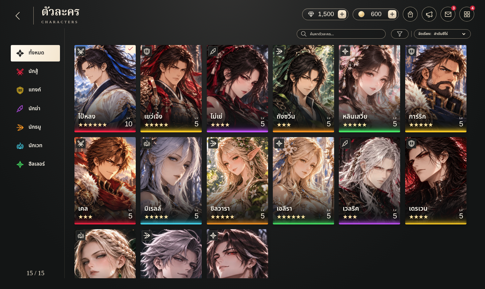
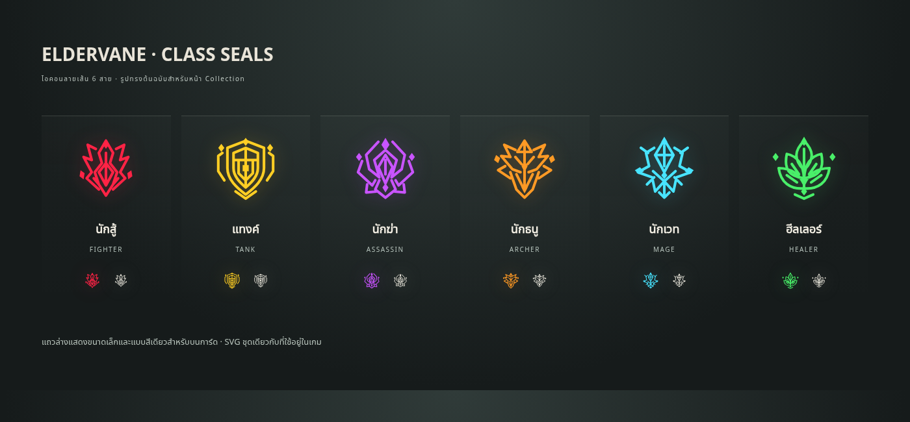

ขยายช่องค้นหา ตัวกรอง และจัดเรียงขึ้นเล็กน้อย เมนูบนขนาดเดิม กริดยัง 6 ใบต่อแถว ส่วนล่างสเกล 80% เท่าเดิม เพิ่มแสงเฉียง เส้นวงโคจรและประกายดาวบางๆ บนชาร์โคล


ลายเส้นเหลี่ยมละเอียดตามแนวภาพ glyph ที่ผู้ใช้แนบ (ฟ้าและม่วง) ออกแบบรูปทรงใหม่ครบ 6 สาย ใช้เส้นชุดเดียวกันทั้งตัวกรองและบนการ์ด ภาพด้านบนคือแผ่นแสดงไอคอน ส่วนภาพ actual เป็น screenshot จากเกมจริง ไม่รีทัช
ตรวจ Desktop 4 ขนาด ทั้งค้นหา กรอง จัดเรียง การนำทางและเซฟ · ยังไม่ merge/deploy